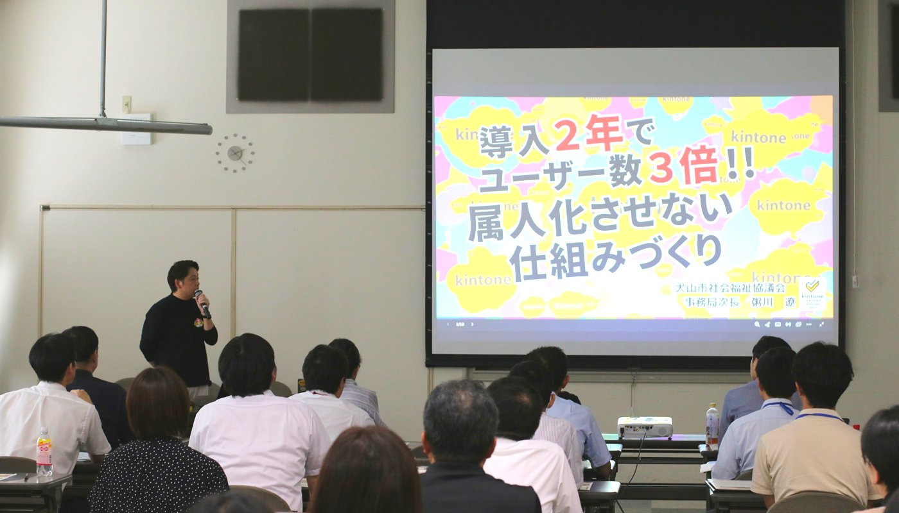
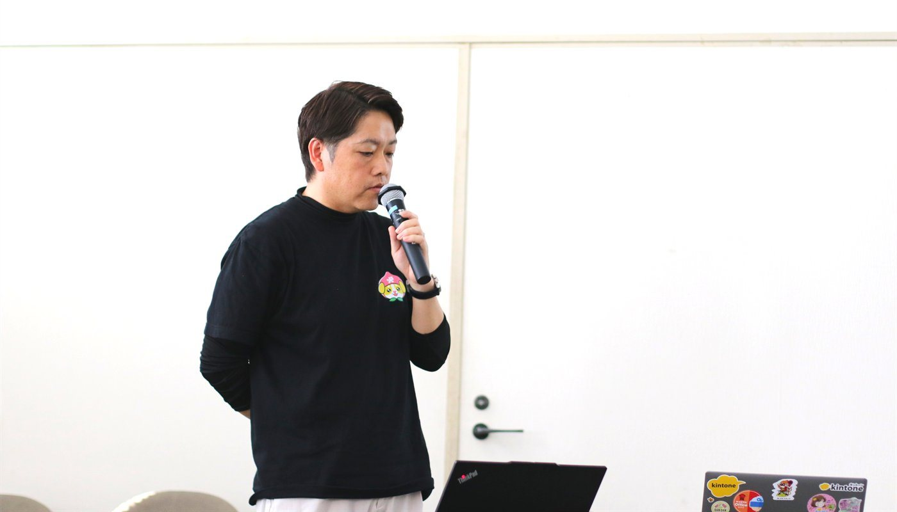
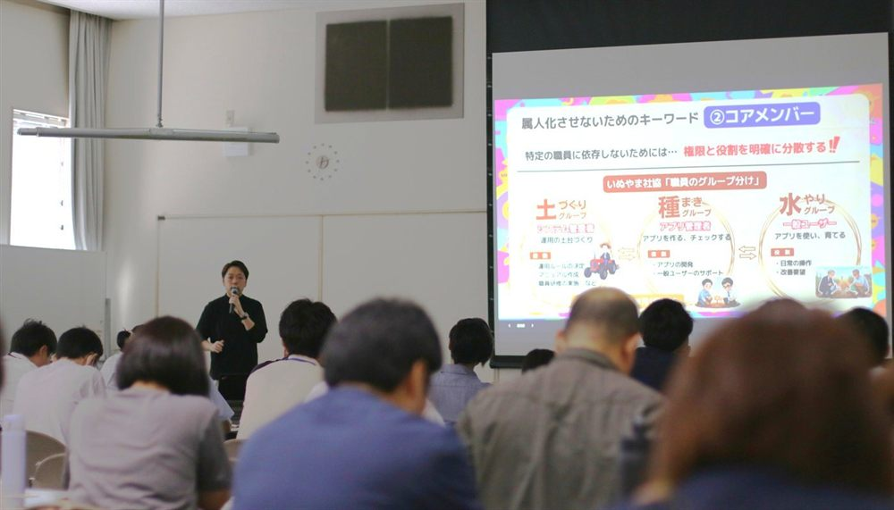

講演2
導入2年でユーザー数3倍！属人化させない仕組みづくり
社会福祉法人犬山市社会福祉協議会 事務局次長 粥川 遼 氏



概要
2年前の赴任当時、紙での管理やぐちゃぐちゃなExcelデータに直面し、興栄コンサルタントの提案でkintoneを導入。
現在では、介護事業パートを除く職員26名のうち21名（8割以上）がアカウントを持ち、26業務・68アプリを運用するまでに定着。
業務の属人化を防ぐために同社協が実践した「トップダウン」「コアメンバー」「スモールスタート」の3つのキーワードに基づき、具体的な組織・普及ロードマップが語られました。
発表の重要トピック
- トップダウンによる「3つの壁（孤立・部門・時間）」の突破ボトムアップで導入しようとすると、「詳しい職員に任せて孤立する」「隣の部署に展開できない」「覚える時間がない」といった壁にぶつかります。管理職が「kintoneの導入は通常業務の一部である」と位置づけることで、職員が孤立せず、余分な残業をすることなく時間・人員・予算といったリソースを確保しやすくなります。
- 役割と権限を分散する「3名のコアメンバー体制」自分が異動した後も組織が自走できるよう、役割を明確に分散して月1回のミーティングを実施しています。
- システム管理者：全体のルール決定、マニュアル作成、研修実施。
- 種まきグループ（コアメンバー2名）：アプリの開発、一般ユーザーのサポートや修正対応。
- 水やりグループ（一般ユーザー）：日常の操作、使いにくさや改善要望のフィードバック。
- 地盤を徹底して固める「12ヶ月間のスモールスタート」いきなり全部署で始めず、最初の1年間は総務周りの1〜2つの対象業務に絞り込んで運用のサイクルを確立しました。特に、基盤となる「名簿アプリ」の設計や、全アプリに共通するフィールド名・持ち方のルール（苗字と名前を分けるか、文字列にするか数値にするか等）の地盤を徹底して作り込みました。
- コスト抑制運用有償の連携サービスは2つ（プリントクリエイター、フォームブリッジ）のみに厳選し、その他は無料のプラグイン（検索、一覧集計、一覧画面の不要ヘッダー省略、条件分岐プラグイン等）をフル活用。年間コスト約77万円（職員1人あたり月額約3,000円）というリーズナブルな運用を実現しています。
Q&Aおよび補足
Q. 職員にExcelからkintoneへ移行してもらう際、どのように納得してもらい、入力作業等は誰が行ったか？
A. Excelが便利でkintoneへの移行を拒むというより、壊れかけた複雑なExcelを「よくわからないまま使っていた」のが現状でした。移行の際は「kintoneにするとどんな良い姿（業務がどう楽になるか）になるか」を事前に丁寧に示して理解を得ました。移行作業に関しては、一般職員に負荷をかけないよう、コアメンバーが既存のExcelを共通ルールに合うようフォーマット変換した上で一括取り込み（インポート）を行いました。
Q. アカウント運用の財源はどう確保したか？
A. 年間約77万の費用のうち、約半分は市の補助金を確保して活用し、残りは自己財源で賄っていますが、kintone導入によって確実に時間外勤務（残業手当）が削減できているため、組織全体で経費回収ができています。
セミナーレポート（概要）に戻る